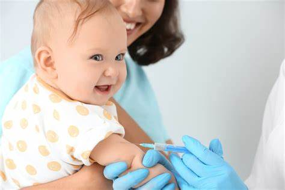

Services
WellWise pharmacy is dedicated to offering a comprehensive range of services that cater to the diverse healthcare needs of our valued customers. At the core of our services is our commitment to dispensing prescription medications with the utmost precision and care. Our experienced and knowledgeable pharmacists work diligently to ensure that each prescription is accurately filled and that patients understand how to take their medications safely. We also take pride in our ability to provide a wide selection of over-the-counter (OTC) medications and healthcare products, making it convenient for our patrons to find the remedies and supplies they need for various common health concerns. Whether it's pain relief, cold and flu remedies, or vitamins and supplements, our well-stocked OTC section has you covered.
In addition to medication services, we prioritize your well-being by offering immunizations to keep you and your loved ones protected. From annual flu shots to other important vaccinations, our trained pharmacists are here to help you stay up-to-date with your immunization schedule. Furthermore, we understand the significance of personalizing your healthcare experience. For those with unique medication requirements, our compounding services allow us to create customized medications tailored to your specific needs, whether it's adjusting dosages, changing the form of the medication, or accommodating individual preferences.
At WellWise pharmacy, we're not just a place to pick up your prescriptions; we're a trusted partner in your healthcare journey, committed to ensuring your health and well-being.
1. Audiology
5% of the world's population has disabling hearing loss.
According to the World Health Organization(WHO), about 1/3 of people over the age of 65 years old have some degree of hearing loss
At our Audiology Center, we are dedicated to providing exceptional hearing healthcare services to enhance your quality of life. Our team of highly trained and experienced audiologists is committed to addressing your individual hearing needs with a comprehensive range of services. We offer a variety of diagnostic assessments to evaluate your hearing health, including hearing tests and evaluations. These assessments help us determine the nature and extent of your hearing loss, allowing us to recommend the most suitable treatment options.
Our audiology services extend beyond diagnostics; we also offer expert guidance on hearing aid selection, fitting, and maintenance. Whether you're a first-time hearing aid user or seeking an upgrade, we take the time to understand your lifestyle and preferences to recommend the best hearing solution for you. Our commitment doesn't stop at hearing aid selection – we provide ongoing support, adjustments, and regular check-ups to ensure your hearing aids are delivering optimal results. At our Audiology Center, we believe that better hearing leads to improved overall well-being, and we are here to assist you on your journey to hearing better, communicating effectively, and reconnecting with the world around you.
2. Birth Control Teleconsult


We're dedicated to providing convenient and confidential access to birth control options that empower individuals to make informed decisions about their reproductive health. We understand that discussing birth control can be a personal and sensitive matter, which is why we offer the convenience of teleconsultation with experienced healthcare professionals. Our platform allows you to schedule a secure and private video consultation, eliminating the need for in-person visits and providing easy access to birth control information and prescriptions.
During your teleconsult, our skilled healthcare providers will guide you through the available birth control methods, discuss their benefits and potential side effects, and help you select the option that aligns with your unique needs and preferences. We take your health and privacy seriously, ensuring that your consultation remains confidential and safe. Whether you're looking for short-term contraception, long-acting birth control, or emergency contraception, our Birth Control Teleconsult service is here to provide the information and prescriptions you need, all from the comfort and convenience of your own home. We're committed to offering a modern and accessible solution to empower individuals in managing their reproductive health and family planning decisions.
Read More3. Quit Smoking Service
About 50% of Malaysian men(18 years & above) smoke.
About 20% of teenegers smoke. 85% of teenegers end up as a addicts.
At WellWise pharmacy we also provide Quit Smoking Service which ssis dedicated to helping individuals embark on a journey towards a healthier, smoke-free life. We understand that quitting smoking can be a challenging endeavor, and that's why we offer a comprehensive program designed to support and guide you every step of the way. Our experienced and compassionate team of healthcare professionals is here to provide personalized counseling and evidence-based strategies to help you kick the habit for good. We recognize that each person's journey is unique, and our services are tailored to meet your specific needs and preferences.
Through our Quit Smoking Service, we provide a range of resources, from smoking cessation medications to behavioral therapy and counseling. Our trained experts will work closely with you to develop a personalized quit plan, addressing your triggers, coping mechanisms, and strategies to manage cravings. We understand that quitting smoking is not just about breaking a habit; it's about transforming your life for the better. Our commitment is to empower you with the tools, information, and support needed to achieve a smoke-free lifestyle, leading to improved health and a brighter future. Your well-being is our priority, and we are here to assist you every step of the way on your journey to a tobacco-free life.
Read More4. Medication Counseling
Our primary goal is to ensure that you have a comprehensive understanding of your prescribed medications, empowering you to manage your health effectively. We recognize that taking medications can sometimes be complex, and we are here to provide clarity and support. Our team of experienced pharmacists is dedicated to offering personalized counseling sessions, either in-person or through telehealth consultations, to address any questions or concerns you may have about your medications. We take the time to explain the purpose of each medication, potential side effects, and how to take them properly, all while considering your unique health profile and any possible drug interactions.
Medication counseling plays a pivotal role in helping you adhere to your treatment plan, ensuring that you get the most benefit from your prescribed medications while minimizing the risk of adverse effects. We are committed to improving your overall health and well-being by fostering a strong patient-pharmacist relationship built on trust and knowledge. Whether you're managing a chronic condition, starting a new medication, or simply seeking more information about your health regimen, our Medication Counseling service is here to provide you with the guidance and support you need to make informed decisions about your healthcare. Your health is our priority, and we are dedicated to ensuring that you are well-informed and confident in managing your medications.
Read More5. Immunizations
We take pride in offering a vital service that plays a crucial role in safeguarding public health. Immunizations are one of the most effective means of preventing the spread of contagious diseases and protecting individuals of all ages. We understand that each stage of life comes with its own set of recommended vaccinations, from childhood to adulthood and beyond. Our experienced healthcare professionals are committed to providing comprehensive and up-to-date immunisations services, ensuring that our community is equipped with the necessary tools to defend against preventable illnesses.
Our mission is to make immunizations easily accessible, ensuring that everyone in our community has the opportunity to benefit from these life-saving vaccines. Whether you're a concerned parent seeking to keep your child's vaccination schedule on track, a traveler requiring vaccinations for international journeys, or an adult in need of annual flu shots or recommended boosters, we're here to guide you. We're dedicated to promoting public health and protecting our community from vaccine-preventable diseases, contributing to a safer, healthier world for all. Your well-being is our top priority, and we are here to provide you with the knowledge, care, and immunization services you need to stay healthy and protect those around you.
Read More